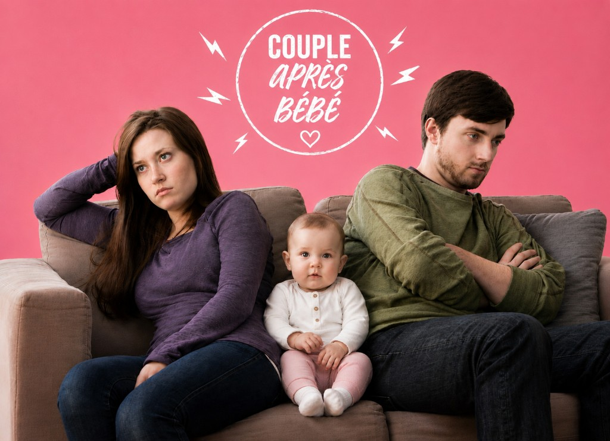

COUPLE APRÈS BÉBÉ
QUAND BÉBÉ ARRIVE, LE COUPLE EST MIS À L'ÉPREUVE
Épisode 1 — On se parle plus
EntreMeres TV : gratuit avec votre compte. Créer un compte
Vous êtes maman et vous souhaitez raconter votre histoire devant les caméras ? Découvrez les castings en cours et candidatez en quelques minutes.
Je candidateVous aimez cuisiner et partager vos meilleures recettes ?
Participez à Mama Chef, la nouvelle émission d'EntreMères TV où des mamans passionnées s'affrontent dans des défis gourmands, dans une ambiance conviviale et bienveillante. Que vous soyez experte en pâtisserie ou simplement passionnée de cuisine familiale, votre talent mérite d'être mis en lumière !
Rejoignez l'aventure et tentez de remporter le titre de Mama Chef ! 🍰✨
Votre couple a changé depuis l'arrivée de bébé ?
EntreMeres TV recherche des couples prêts à partager leur histoire avec authenticité. Fatigue, manque de temps, disputes, éloignement, mais aussi amour, reconstruction et nouveaux équilibres : racontez votre parcours après l'arrivée de votre enfant.
Candidatez dès maintenant !
Chaque maman a une histoire à raconter.
Joies, doutes, charge mentale, allaitement, solitude, accouchement, handicap, deuil, renaissance ou moments de bonheur : EntreMeres TV donne la parole aux mamans. Nous recherchons des femmes de tous horizons prêtes à partager leur vécu avec sincérité afin d'aider, inspirer et soutenir d'autres mamans.
Votre histoire mérite d'être entendue. Candidatez dès maintenant.
Et si on vous suivait pendant une journée entière ?
EntreMeres TV recherche des mamans prêtes à ouvrir les portes de leur quotidien. Réveil, préparation des enfants, travail, repas, courses, charge mentale, moments de joie, fatigue, organisation… une immersion authentique dans la vraie vie d'une maman.
Nous souhaitons montrer la réalité de la maternité, sans filtre et avec bienveillance.
Partagez votre quotidien et inspirez d'autres mamans. Candidatez dès maintenant.
Inspirez-vous de votre vécu : authenticité et sincérité font la différence.
Les équipes de production reçoivent de nombreuses candidatures. Vous serez recontactée uniquement si votre profil est retenu.
Consultez la liste ci-dessus : seules les émissions marquées « Casting ouvert » acceptent des candidatures. Si une émission n'y figure pas, il n'y a pas de casting en cours.
Le délai varie selon les émissions. Sans nouvelles de notre part, cela signifie que votre candidature n'a pas été retenue pour cette session.
Smart TV, Chromecast, Apple TV, tablette et ordinateur.
Enregistrez vos épisodes préférés pour les regarder sans Wi-Fi.
Accès illimité sur tous vos appareils connectés.
EntreMeres TV est le service de streaming de la communauté EntreMeres : séries, documentaires et contenus autour de la maternité et de l'entraide entre mamans.
EntreMeres TV est inclus dans votre compte EntreMeres. Créez un compte gratuitement et accédez au catalogue depuis l'onglet TV.
Sur smartphone, tablette, ordinateur ou en diffusant sur votre TV via Chromecast ou AirPlay.
SOS Maman, Recettes bébé, Couple après bébé, Allaitement sans filtre et bien d'autres contenus. De nouveaux épisodes arrivent chaque semaine.
Prêt à regarder EntreMeres TV ? Créez votre compte gratuitement — le même que sur l'app.
Déjà inscrite ? Connectez-vous